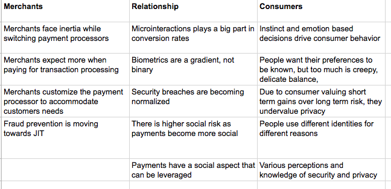

This week we finally began conducting interviews. Interviews are invaluable because we get to hear about goals, problems and opinions in the users’ own words.
Our prompt being so open, we had to interview as many different stakeholders as we could. These included consumers, micro merchants, small restaurants, food trucks, online business owners and experts at fintech companies, Venmo and Shopify.
Questions to Merchants
This discovery phase will end in the second week of March. For the first week we learned all we could about how consumers felt about different authentication methods and technologies. We went out into the field for the first time and went guerilla with our research.
To generate interview questions for merchants, we first needed a wide-ranging understanding of the payment process from the perspective of the merchant. For this, we took a bird’s eye approach and created an infographic depicting said process, right from when a customer decides they want to buy an item and enters a store, to when they leave.
Merchants almost always create a custom payment flow
We noticed that this was the case for all kinds of merchants. From micro merchants to larger merchants. This was rather fascinating because it tells us two things. One, merchants are always customizing the payment process to tailor it to their customers. Two, there always is room for improvement in the payment process.
Identity and privacy are different in different contexts
Identity and privacy are context dependent, and are variable across customers. This could be based on many factors like brand trust, previous experiences, etc. For example, a user who posts controversial posts on Reddit might also have a more conventional digital identity that he/she uses at their workplace.
Too much convenience might not necessarily be a good thing
When it becomes too easy to pay for an item, the chances of customers overspending increases. While this may be ideal for the merchant, it is the customer that bears the cost. As designers we need to be wary of any unintended consequences of our designs.
Customers are willing to sacrifice their privacy for convenience
Many times however, customers perceived risk and actual risk don’t align. We observed cases where customers admitted they skip security processes because they believe the threat is low. Customers buy clothes off sketchy websites because cost savings trump privacy.
There is high variance in privacy perception amongst customers
Depending on the context, customers often question where there data is being used. However on a lot of occasions we observed that people have different emotions when it comes to trust including apathy, feelings of inconvenience, invasiveness, etc.
Embarrassing social situations
The transfer of money is always a sensitive issue no matter who the two parties are. This is heightened when it comes to biometrics.
When used wrong analytics can hurt merchant-customer relationships
A lot of customers understand the importance and want their data to be tracked (for recommendations, well placed ads, etc.), but they also don’t want their data to be tracked. Where do they draw their line, how much do their feelings towards this problem change in different context?
Microinteractions are SUPER important
From well designed feedback mechanics to interactions that subtly create trust and awareness in users, microinteractions are key. One of the people we interviewed bought the same shirt three times on Amazon, because there was no feedback!
At this point we still had a few interviews remaining. These included more consumers (we thought of interviewing students from our cohort who used Uber, UberEats, Venmo, etc. frequently) and more micro merchants like Prantl’s Bakery in Shadyside. However, with SxSW round the corner and time running out, we decided to go ahead and start creating an Affinity Diagram and include the new notes later on.
Affinity Diagram
As expected, we generated a lot of notes from our interviews. Taking the advice of our faculty advisors we scrapped notes so that we eventually had ten notes per interview on average. We started out by putting all the notes on the wall in vague clusters.
Then we took more time to group the notes and came up with the first version of level-one grouping in yellow post-its.
With the yellow post-its, we predominantly split our notes by Merchant, Customer and perceptions, feelings, motivations. Here is an overview of our version one grouping.
Trying to interpret the notes in a different perspective, we took off all the level-one groupings and re-grouped the notes one more time. The second round was especially hard as we had to break out from our established understanding of the notes and interpret them in a totally different way. Eventually, instead of merchant / customer lines from the first version, our second split was along Time, Place, Context, Emotions.
We were able to discover some interesting patterns in both rounds. Selecting the more insightful yellow notes from both rounds, we finalized our level-one grouping!
Moving on to the second-level grouping, we saw some clear distinction between sentiments from merchants and customers, and tried to split up yellow notes in three buckets: merchant / customer / interaction in-between.
After a few more painful iterations, we were able to come up with a second-level of grouping with blue notes. From this point, we looked at all the blue notes and tried to distill the final level of insights from them. This part was fairly easier, as many of our blue notes were insightful enough.

And these are our final insights!
